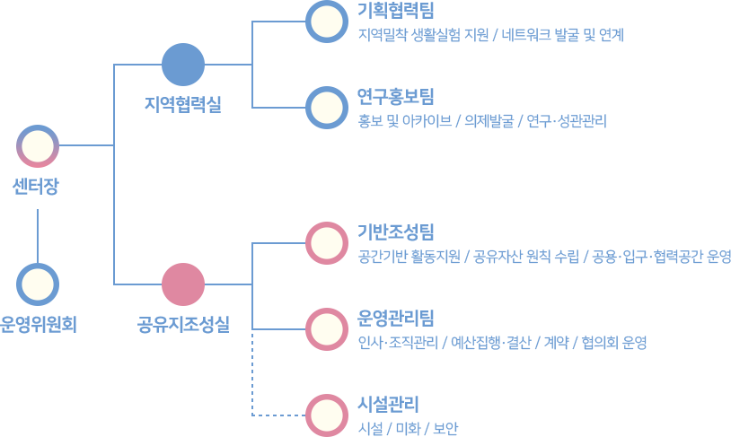

센터조직

- 센터장
- 지역협력실
- 기획협력팀 : 지역밀착 생활실험 지원 / 네트워크 발굴 및 연계
- 연구홍보팀 : 홍보 및 아카이브 / 의제발굴 / 연구·성관관리
- 공유지조성실
- 기반조성팀 : 공간기반 활동지원 / 공유자산 원칙 수립 / 공용·입구·협력공간 운영
- 운영관리팀 : 인사·조직관리 / 예산집행·결산 / 계약 / 협의회 운영
- 시설관리 : 시설 / 미화 / 보안
- 지역협력실
- 운영위원회
함께하는 사람들
대표전화 : 064-759-8556 대표이메일 : hello@jejusotong.kr
| 센터장 | 강경필 팀장 겸직 | bk.min@jejusotong.kr | 센터 총괄 |
|---|---|---|---|
| 지역협력실 | 최진 실장 | j.choi@jejusotong.kr | 지역협력실 총괄, 사업전략수립 및 대외협력 |
| 기획협력팀 | 박정연 팀장 | jy.park@jejusotong.kr | 기획협력 총괄, 업무협력 및 네트워크 |
| 이경진 매니저 | kj.lee@jejusotong.kr | 제주생활탐구, 기획형 리빙랩(공유이동수단) | |
| 이소현 매니저 | sh.lee@jejusotong.kr | 제주생활공론, 지역거점공간 발굴·연계 | |
| 정재만 매니저 | jm.jung@jejusotong.kr | 지속가능한 제조를 위한 지역자원 발굴·연계 | |
| 연구홍보팀 | 김현주 팀장 | jay@jejusotong.kr | 연구홍보 총괄, 언론홍보, 뉴스레터, 찾아가는 톡톡카페 |
| 강현자 매니저 | hj.kang@jejusotong.kr | 기획협력 총괄, 업무협력 및 네트워크 | |
| 공유지조성실 | 강경필 실장 | ggp007@jejusotong.kr | 공유지조성실 총괄, 조직 및 예산관리 |
| 기반조성팀 | 강경필 팀장 겸직 | ggp007@jejusotong.kr | 기획협력 총괄, 업무협력 및 네트워크 |
| 부형석 매니저 | ryan@jejusotong.kr | 컨시어지 및 질문도서관, 공간운영 프로그램 기획·운영 | |
| 박수진 매니저 | sj.park@jejusotong.kr | 혁신활동 실험실 프로그램 기획·운영 | |
| 운영관리팀 | 한건혜 팀장 | gh.han@jejusotong.kr | 운영관리 총괄, 인사, 예산 및 계약관리 |
| 홍은애 매니저 | ea.h@jejusotong.kr | 총무 회계, 채용 |